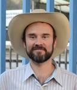

PRESENTACIÓN
C&G
Consultores en Ingeniería Hidráulica, es un grupo de profesionales y
especialistas con amplio expertis
en la planeación, análisis, desarrollo e implementación de proyectos y
soluciones integrales (técnico-ambiental-social-económico).
Ofrecemos
servicios de consultoría de alta especialidad en temas de:
a) Ingeniería
básica, desarrollo de estudios base, como son: levantamientos topográficos, fotogravimétricos, batimetrías, mecánica de suelos,
geotecnia, geofísica, geo-hidrológicos y
estructurales.
b) Ingeniería
hidráulica, desarrollo de estudios en hidrología, hidráulica
fluvial y pluvial, dinámica de sedimentos, sistemas de pronóstico y alerta
temprana, análisis de peligro, vulnerabilidad y riesgo por inundación, lo
anterior, para la prevención de riesgos asociados a fenómenos naturales de
origen hidrometeorológico, incremento de la resiliencia y reducción de la vulnerabilidad.
c) Gestión
Ambiental, para el cumplimiento de la legislación y normatividad ambiental
mexicana vigente -federal, estatal y local- previo al proyecto, como son:
impacto ambiental, riesgo ambiental y cambio de uso de suelo.
d) Gestión
Social, desarrollo de estudios de impacto social para el cumplimiento de la
legislación en materia energética.
e) Evaluación
económica, para el desarrollo de proyectos, como son: análisis de alternativas,
análisis costo-beneficio, y asociaciones público-privada.
MISIÓN
Colocarnos
como un grupo líder en México en soluciones integrales, con el más alto
profesionalismo y compromiso para con la sociedad y el ambiente.
VISIÓN
Ofrecer y
desarrollar soluciones integrales, adaptables y a la medida de nuestros
clientes, en favor de la sociedad y con el debido cuidado al ambiente.
VALORES
•
HONESTIDAD Ofrecer soluciones reales a problemas reales con base en los principios
de ética profesional
•
PROFESIONALISMO Equipo de trabajo con alto nivel de capacidad
y experiencia
•
EFICACIA Identificación inmediata de la problemática y diseño de la solución
efectiva en el menor tiempo posible utilizando tecnología y conocimientos de
punta
•
COMPROMISO Coordinación con el cliente desde el inicio y en cada etapa hasta la
obtención de la solución integral adecuada y satisfactoria
EXPERIENCIA
Hemos
realizado proyectos para la Comisión Nacional del Agua, Comisión Federal de
Electricidad, PEMEX, FONATUR Tren Maya y Gobiernos locales, entre otros.
Contamos con
experiencia en la organización de foros, seminarios y cursos en temas de:
·
Gestión de
riesgos
·
Aprovechamiento
de agua
·
Seguridad
hídrica
·
Derecho
humano al agua
·
Legislación
en materia de agua y ambiental
·
Impacto
Ambiental
Nuestro
grupo está formado por profesionistas altamente capacitados con nivel de
licenciatura y maestría en diversas áreas de la ingeniería, biología,
arquitectura y legislación, lo que nos permite ofrecer soluciones a problemas
complejos en las siguientes áreas:
AGUA POTABLE
·
Estudios de
factibilidad y proyectos ejecutivos de aprovechamiento hidráulico
·
Análisis y
diseño de sistemas de abastecimiento de agua
·
Análisis de
fugas y de sectorización de redes de agua potable
·
Modelación
matemática de flujo a presión (Redes de agua potable)
·
Sistemas de
potabilización y desinfección de agua
·
Estudios de
calidad del agua
·
Medición de
caudales en redes de agua potable
APROVECHAMIENTO AGRÍCOLA
·
Análisis y
diseño de sistemas de riego
·
Diseño de
drenaje agrícola
·
Evaluación de
la factibilidad de desarrollos agrícolas
DRENAJE Y SANEAMIENTO
·
Análisis y
diseño de sistemas de drenaje y saneamiento
·
Diseño de
drenaje pluvial y combinado
·
Análisis y
diseño de procesos para el tratamiento de agua residual
GESTIÓN DE RIESGO POR INUNDACIÓN
·
Análisis
hidrológicos de precipitación y escurrimiento
·
Estudios de
gestión del riesgo por inundación
·
Elaboración
de Atlas de riesgos por fenómenos hidrometeorológicos
·
Modelación
matemática de flujo a superficie libre 1D y 2D (Flujo en ríos y en llanuras de
inundación)
·
Análisis y
diseño de obras hidráulicas para protección
·
Estudios de
vulnerabilidad, resiliencia y problemática social del agua
·
Análisis y
diseño de sistemas de alerta temprana
·
Estudios de
percepción remota aplicados a Sistemas de Información Geográfica (SIG)
·
Delimitación
de Zonas Federales
GOBERNANZA Y POLÍTICAS PÚBLICAS
·
Análisis de
alternativas para selección de proyectos mediante metodologías multicriterio
·
Gestión de
procesos para acceso a programas federalizados
·
Análisis y
diseño de políticas públicas en materia hídrica
·
Normatividad
y Legislación del agua
ESTUDIOS SOCIALES
·
Tenencia de
la tierra
·
Estudios de
afectaciones e indemnizaciones
·
Gestión
social de proyectos
·
Consulta
Indígena
·
Análisis de
amenazas y problemática social
·
Medidas de
compensación
GESTIÓN AMBIENTAL
·
Factibilidad
Ambiental
·
Estudios de
impacto ambiental
·
Elaboración
de Manifestación de Impacto ambiental (regional y particular)
·
Estudios
técnicos justificativos de cambio de uso de suelo
·
Pasivos
ambientales
·
Medidas de
remediación o compensación ambiental
INTEGRANTES DEL GRUPO ASESOR
M.I. Juan
Javier Carrillo Sosa
Académico de
la Coordinación de Hidráulica del Instituto de Ingeniería de la Universidad
Nacional Autónoma de México y Coordinador de riesgos hidrometeorológicos de la
Red del Agua de la UNAM
Consultor
con 20 años experiencia en proyectos de ingeniería hidráulica con especialidad
en gestión de riesgo por inundaciones y fortalecimiento de resiliencia, planes
integrales de manejo de agua, gestión integral de cuencas, estudios de
factibilidad técnica, económica y financiera, obras hidráulicas, legislación en
materia hidráulica, gobernanza del agua y cambio climático

M.I. Gabriela Gutiérrez Aviña
Ingeniera
Ambiental por la Universidad Nacional Autónoma Metropolitana y Maestra en
Ingeniería (Aprovechamientos hidráulicos) por la División de Posgrado en
Ingeniería de la Universidad Nacional Autónoma de México
Experta en
gestión de proyectos, políticas públicas para el ordenamiento territorial
ambiental, ecohidrología, modelación hidráulica,
impacto ambiental, restauración de cauces, manejo de sedimentos, calidad del
agua, pasivos ambientales y normatividad ambiental
M.I. Federico Moritz Parra
Ingeniero
Ambiental por parte de la Universidad Nacional Autónoma Metropolitana y Maestro
en Arquitectura por parte de la Universidad Nacional Autónoma de México.
Experto en
desarrollo sustentable, energías renovables, impacto ambiental, Análisis de
toma de decisiones, medidas de mitigación o compensación ambiental.
Biol. Luis Samayoa Navarrete
Licenciado
en Biología por la Universidad Nacional Autónoma de México Experto en Sistemas
de información geográfica, mapas de riesgo, biodiversidad y delimitación de
zonas federales.
LTS. Joel Hernández Barrera
Licenciado
en Trabajo Social por la
Escuela Nacional de Trabajo Social de la Universidad Nacional
Autónoma de México
Especialista
en gestión social de proyectos, estudios de tenencia de la tierra,
identificación de afectaciones e indemnizaciones, obras de compensación